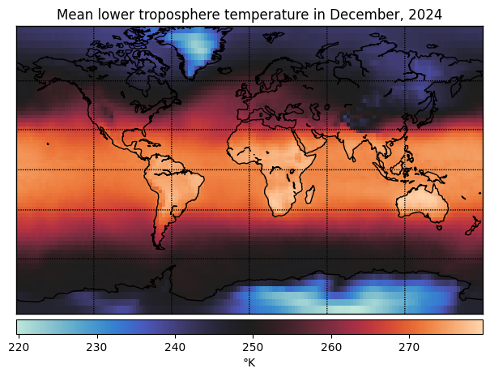
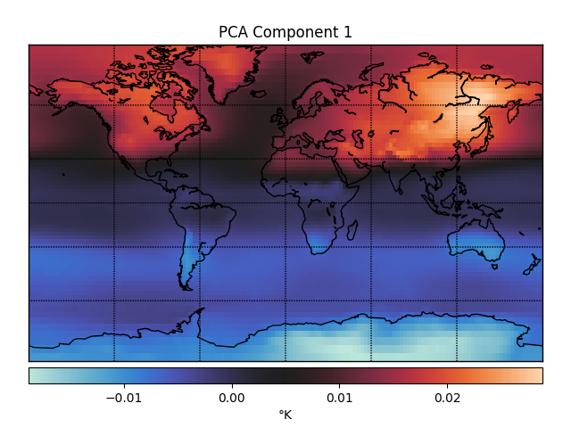
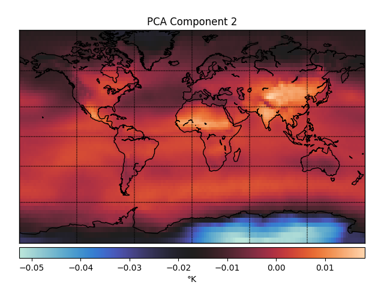
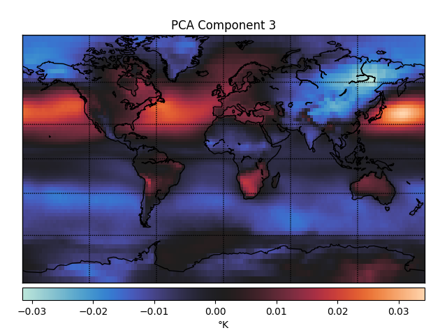
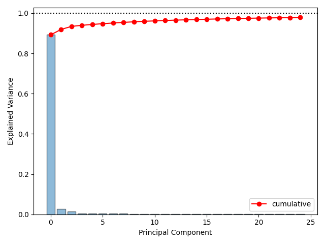
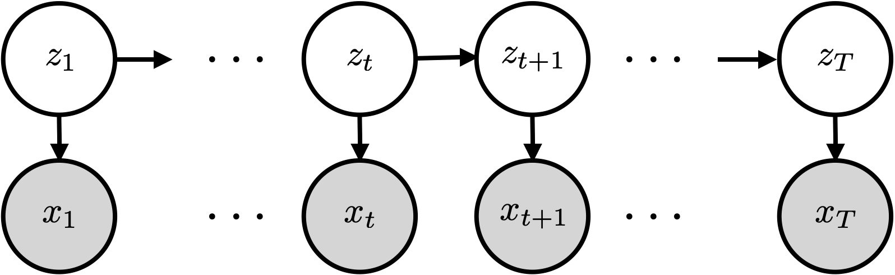

Linear Gaussian Models#
Mixture models and HMMs were discrete latent variable models (LVMs). Data points were attributed to one of \(K\) clusters or latent states. These models naturally extend to continuous latent variables as well, and these extensions are especially nice when we assume linear Gaussian structure. In fact, linear Gaussian LVMs are so common that you have probably heard them under different names, like (probabilistic) PCA, factor analysis, and Kalman filters. Today, we will show how to derive these classic models and algorithms.
Motivating Example#
Take HW3 as an example: for each month, you have temperature measurements at 9504 locations across the globe. Are the measurements really 9504 dimensional?

With high-dimensional measurements like these, we might have a few objectives in mind:
Dimensionality reduction: are there a few dimensions along which the temperatures primarily vary? Maybe northern and southern hemisphere, or land and sea?
Visualization: Sometimes, we want to embed high-dimensional points in 2 or 3 dimensions for visualization. (Not applicable here since the data is already spatial, but this is a general concern with high-dimensional data.)
Compression: How can I best summarize the data if I am willing to sacrifice some reconstruction accuracy?
Principal Components of Global Temperature#
One way you could look for lower dimensional structure is using principal components analysis (PCA). The first three principal components (PCs) of the temperature data look like this.



These PCs capture dimensions of maximal variance in the data. For example, the first PC captures whether a point is in the northern or southern hemisphere, which unsurprisingly accounts for a lot of the variance in temperature fluctuations over time. The second PC captures whether or not a point is over Antarctica, which must be another big determinant of temperature fluctuations.
Principal Components Analysis (PCA)#
There are two classical definitions of PCA (Quoted from Bishop, Ch 12):
An orthogonal projection of the data onto a lower dimensional linear space, known as the principal subspace, such that the variance of the projected data is maximized (Hotelling, 1933).
The linear projection that minimizes the average projection cost, defined as the mean squared distance between the data points and their projections (Pearson, 1901).
We will focus on the first definition today and consider the second next time.
PCA: Maximum Variance Formulation#
Goal: Project data \(\{\mbx_n\}_{n=1}^N\) onto a lower dimensional space of dimension \(M < D\) while maximizing the variance of the projected data.
To start, assume \(M = 1\). The principal subspace is defined by a unit vector \(\mbu_1 \in \reals^D\). This is called the first principal component.
Projecting a data point \(\mbx_n\) onto this subspace amounts to taking an inner product, \(\mbu_1^\top \mbx_n\). These is variously called the scores, embeddings, or signals.
The mean of the projected data is,
where \(\bar{\mbx}\) is the sample mean.
The variance is
where \(\mbS = \frac{1}{N} \sum_{n=1}^N (\mbx_n - \bar{\mbx}) (\mbx_n - \bar{\mbx})^\top \in \reals^{D \times D}\) is the sample covariance matrix. \end{frame}
Now maximize the projected variance wrt \(\mbu_1\),
This is the variational definition of the eigenvector with maximal eigenvalue!
I.e., \(\mbu_1\) is the eigenvector of \(\mbS\) with the largest eigenvalue, \(\lambda_1\).
More generally, to find an \(M\) dimensional principal subspace, take the \(M\) eigenvectors \(\mbu_1, \ldots, \mbu_M\) with the largest eigenvalues \(\lambda_1, \ldots, \lambda_M\).
Since \(\mbS\) is real and symmetric positive definite, the eigenvectors are orthogonal.
PCA and the Singular Value Decomposition#
The first \(M\) principal components are the leading \(M\) eigenvectors of the covariance matrix. Equivalently, they are the first \(M\) right singular vectors of the data matrix.
Let
be the centered and scaled data matrix. Then \(\mbY^\top \mbY = \frac{1}{N} \mbX^\top \mbX = \mbS\) is the covariance matrix.
The singular value decomposition (SVD) of \(\mbY\) is,
I.e. the right singular vectors of \(\mbY\) are the same (up to sign flips) as the eigenvectors of \(\mbS\), and singular values of \(\mbY\) are the square root of the eigenvalues of \(\mbS\).
PCA Explained Variance#
How well do the \(M\) principal components explain the data?
Let \(\mbz_n = \mbU_M^\top (\mbx_n - \bar{\mbx}) \in \reals^M\). Its covariance is,
Of course, if we let \(M = D\), then we have \(\mathrm{Cov}(\mbz) = \diag([\lambda_1, \ldots, \lambda_D])\).
One way of assessing how well \(M\) components fits the data is via the fraction of variance explained,
Scree Plots#

A scree plot showing percent variance explained per component and cumulatively.
Probabilistic PCA: A Continuous Latent Variable Model#
We cast the principal components as the solutions to an optimization problem: maximize the projected variance.
A more modern view of PCA is as the maximum likelihood estimate of a latent variable model.
Advantages#
Probabilistic PCA (PPCA) has many advantages:
It’s a multivariate normal model with low-rank plus diagonal covariance, which takes only \(O(MD)\) parameters.
We can fit the model using a host of inference algorithms, including EM.
It can handle missing data.
We can obtain posterior distributions of the principal components and scores.
It can be embedded in larger probabilistic models.
Model#
The PPCA model is quite simple,
where \(\mbz_n \in \reals^M\) is a latent variable, \(\mbW \in \reals^{D \times M}\) are the weights, \(\mbmu \in \reals^D\) is the bias parameter, and \(\sigma^2 \in \reals_+\) is a variance.
Equivalently, we can think of \(\mbx_n\) as a linear function of \(\mbz_n\) with additive noise,
where \(\mbepsilon_n \sim \cN(\mbzero, \sigma^2 \mbI) \in \reals^D\).
Maximum likelihood estimation of the parameters#
Suppose we only need a point estimate of the parameters \(\mbW\), \(\mbmu\), and \(\sigma^2\).
A natural approach is the maximum likelihood estimate (MLE),
where \(\cL\) is the marginal likelihood,
Exercise
Simplify this expression to show,
Then the log likelihood simplifies to,
where \(\mbC = \mbW \mbW^\top + \sigma^2 \mbI\).
Setting the derivative wrt \(\mbmu\) to zero and solving yields \(\mbmu_{\mathsf{ML}} = \bar{\mbx}\), the sample mean.
Maximizing wrt \(\mbW\) and \(\sigma^2\) is more complex but still has a closed form solution,
where \(\mbU_M \in \reals^{D \times M}\) has columns given by the leading eigenvectors of the sample covariance matrix \(\mbS\), where \(\mbLambda_M = \diag([\lambda_1, \ldots, \lambda_M])\), and where \(\mbR \in \reals^{M \times M}\) is an arbitrary orthogonal matrix.
Put differently, the MLE weights are only identifiable up to orthogonal transformation. Or, only the subspace spanned by \(\mbU_M\) is identifiable.
Finally, the MLE of the variance is,
the average variance in the remaining dimensions.
Questions
What is the marginal covariance \(\mbC\) using the MLE \(\mbW_{\mathsf{ML}}\) and \(\sigma^2_{\mathsf{ML}}\)?
Intuitively, why is the marginal covariance invariant to rotations of the weights?
The Posterior Distribution on the Latent Variables#
Now fix \(\mbW\), \(\mbmu\), and \(\sigma^2\) (e.g. to their maximum likelihood values). What is the posterior of\(\mbz_n\)?
where \(\mbJ_n = \mbI + \frac{1}{\sigma^2} \mbW^\top \mbW\) and \( \mbh_n = \frac{1}{\sigma^2} \mbW^\top (\mbx_n - \mbmu)\)
Completing the square,
The Posterior Distribution in the Zero Noise Limit#
In the limit where \(\sigma^2 \to 0\), the posterior mean of \(\mbz_n\) is,
Now suppose \(\mbW = \mbW_{\mathsf{ML}} = \mbU_M (\mbLambda_M - \sigma^2 \mbI)^{\frac{1}{2}} \mbR\) and set \(\mbR = \mbI\). This goes to \(\mbW = \mbU_M \mbLambda_M^{\frac{1}{2}}\). Then,
How does this relate to the scores in PCA? In PCA, the scores are simply \(\mbU_M^\top (\mbx_n - \mbmu)\). The difference is that here we have an extra scaling by \(\mbLambda_M^{-\frac{1}{2}}\). The difference is because in PCA, the weights are assumed to be orthonormal, and the scale is accounted for in the scores. In probabilistic PCA, the latent variables are assumed to be standard normal under the prior, and the scaling is accounted for in the weights.
EM for Probabilistic PCA#
The E-step is to compute the posterior \(q(\mbz_n) = p(\mbz_n \mid \mbx_n; \mbtheta)\), where \(\mbtheta = (\mbW, \mbmu, \sigma^2)\) are the current parameters. For simplicity, assume the data is centered so that \(\mbmu^\star = 0\).
The M-step is to maximize the expected complete data log likelihood,
As a function of \(\mbW\),
where \(\langle \mbA, \mbB \rangle = \Tr(\mbA^\top \mbB)\) is the Frobenius inner product for matrices \(\mbA\) and \(\mbB\).
Taking derivatives wrt \(\mbW\) and setting to zero yields,
It depends on sums of expected sufficient statistics!
Exercise:
Derive the expected sufficient statistics and the M-step update for \(\sigma^2\).
Factor Analysis#
Factor analysis is another continuous latent variable model. In fact, it’s almost the same as probabilistic PCA!
The difference is that FA allows \(\sigma^2\) to vary across output dimensions. The generative model is,
where \(\mbsigma^2 = [\sigma_1^2, \ldots, \sigma_D^2]^\top\).
Exercise
Without doing any math, derive EM for this factor analysis model.
Linear Dynamical Systems#
We generalized from mixture models to HMMs by assuming that the latent states were dependent.
HMMs assume a particular factorization of the joint distribution on latent states (\(z_t\)) and observations \((\mbx_t)\). The graphical model looks like this:

This graphical model says that the joint distribution factors as,
We call this an HMM because \(p(z_1) \prod_{t=2}^T p(z_t \mid z_{t-1})\) is a Markov chain.
State space models (SSMs)#
Note that nothing above assumes that \(z_t\) is a discrete random variable!
HMM’s are a special case of more general state space models with discrete states.
State space models assume the same graphical model but allow for arbitrary types of latent states.
For example, suppose that \(\mbz_t \in \mathbb{R}^D\) are continuous valued latent states and that,
This is called a Gaussian linear dynamical system (LDS).
Message passing in HMMs#
In the HMM with discrete states, we showed how to compute posterior marginal distributions using message passing,
where the forward and backward messages are defined recursively
The initial conditions are \(\alpha_1(z_1) = p(z_1)\) and \(\beta_{T}(z_T) = 1\).
What do the forward messages tell us?#
The forward messages are equivalent to,
The normalized message is the predictive distribution,
The final normalizing constant yields the marginal likelihood, \(\sum_{z_T} \alpha_T(z_T) = p(\mbx_{1:T})\).
Message passing in state space models#
The same recursive algorithm applies (in theory) to any state space model with the same factorization, but the sums are replaced with integrals,
where the forward and backward messages are defined recursively
The initial conditions are \(\alpha_1(\mbz_1) = p(\mbz_1)\) and \(\beta_{T}(\mbz_T) \propto 1\).
Forward pass in a linear dynamical system#
Consider an linear dynamical system (LDS) with Gaussian emissions,
Let’s derive the forward message \(\alpha_{t+1}(\mbz_{t+1})\). Assume \(\alpha_{t}(\mbz_{t}) \propto \cN(\mbz_{t} \mid \mbmu_{t|t-1}, \mbSigma_{t|t-1})\).
The update step#
The first step is the update step, where we condition on the emission \(\mbx_t\),
Exercise
Expand the densities, collect terms, and complete the square to compute the mean \(\mbmu_{t|t}\) and covariance \(\mbSigma_{t|t}\) after the update step, :class: tip
Write the joint distribution,
Since \((\mbz_t, \mbx_t)\) are jointly Gaussian, \(\mbz_t\) must be conditionally Gaussian as well,
Exercise
Now use the Schur complement to solve for \(\mbmu_{t|t}\) and \(\mbSigma_{t|t}\)
Kalman gain
Write \(\mbmu_{t|t}\) and \(\mbSigma_{t|t}\) in terms of the Kalman gain
What is the Kalman gain doing?
The predict step#
The predict step yields \(p(\mbz_t \mid \mbx_{1:t}) = \cN(\mbz_t \mid \mbmu_{t|t}, \mbSigma_{t|t})\). To complete the forward pass, we need the predict step,
Exercise
Solve for the mean \(\mbmu_{t+1|t}\) and covariance \(\mbSigma_{t+1|t}\) after the predict step.
Completing the recursions#
That wraps up the recursions! All that’s left is the base case, which comes from the initial state distribution,
Computing the marginal likelihood#
Like in the discrete HMM, we can compute the marginal likelihood along the forward pass.
Exercise
Obtain a closed form expression for the integrals.
Backward pass in a linear dynamical system#
The backward pass in the LDS computes the smoothing distributions
The forward pass gives us the filtering distributions \(p(\mbz_t \mid \mbx_{1:t})\). How can we compute the smoothing distributions, \(p(\mbz_t \mid \mbx_{1:\textcolor{red}{T}})\)?
In the discrete HMM we essentially ran the same algorithm in reverse to get the backward messages, starting from \(\beta_{T}(\mbz_T) \propto 1\).
We can do the same sort of thing here, but it’s a bit funky because we need to start with an improper Gaussian distribution \(\beta_T(\mbz_T) \propto \cN(\mbzero, \infty \mbI)\).
Instead, we’ll derive an alternative way of computing the smoothing distributions.
Bayesian Smoothing#
Note: \(\mbz_t\) is conditionally independent of \(\mbx_{t+1:T}\) given \(\mbz_{t+1}\), so
Question
What rules of probability did we apply in each of these steps?
Now we can write the joint distribution as,
Marginalizing over \(\mbz_{t+1}\) gives us,
Question
Can we compute each of these terms?
The Rauch-Tung-Striebel (RTS) Smoother, aka Kalman Smoother#
These recursions apply to any Markovian state space model. For the special case of a Gaussian linear dynamical system, the smoothing distributions are again Gaussians,
where
This is called the Rauch-Tung-Striebel (RTS) smoother or the Kalman smoother.
Conclusion#
Linear Gaussian latent variable models are ubiquitous in machine learning and statistics. They are even hiding in familiar places: whenever we apply PCA, we’re essentially using an LG-LVM. There are several more variants of these models, including canonical correlation analysis (CCA), independent component analysis (ICA), and many more.
State space models are near and dear to my heart, and I wish we had more time to cover them in this course. In particular, my lab has worked on switching linear dynamical systems, which are a mash-up of HMMs and LDSs. We also work on better algorithms for inference in SSMs, and deep SSMs that we’ll discuss in a later chapter.